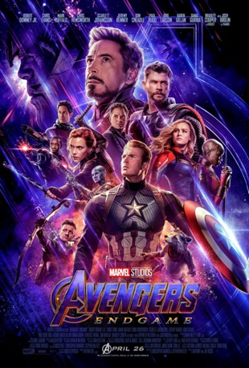

Quem é o Tony Stark

Meu nome é Tony Stark. Sou engenheiro, inventor e fundador da Stark Industries. Desde jovem, dediquei minha vida ao desenvolvimento de tecnologias capazes de transformar o mundo. Após perceber os perigos que minhas próprias criações poderiam causar quando usadas de forma irresponsável, decidi utilizar meu conhecimento para proteger pessoas e enfrentar ameaças que colocam a humanidade em risco. Foi assim que nasceu o Homem de Ferro. Para mim, a tecnologia não deve apenas impressionar, mas também melhorar vidas, resolver problemas e abrir caminho para um futuro melhor. Cada armadura que construí representa anos de pesquisa, inovação e a busca constante por superar limites que pareciam impossíveis.
Os principais momentos de ultilização das armaduras
Homem de Ferro Ano:(2008)

Eu sou Tony Stark, fundador da Stark Industries e um dos maiores inventores do mundo. Depois de ser sequestrado durante uma viagem, percebi que minhas tecnologias estavam sendo usadas de forma errada. Para escapar, construí minha primeira armadura e decidi dedicar minha inteligência à proteção das pessoas, tornando-me o Homem de Ferro.
Homem de Ferro 2 Ano:(2010)

Depois de revelar ao mundo que sou o Homem de Ferro, minha vida mudou completamente. Enquanto governos e rivais tentavam obter minha tecnologia, precisei enfrentar novos inimigos e lidar com problemas que ameaçavam minha saúde. Mesmo assim, continuei aperfeiçoando minhas armaduras e protegendo o mundo.
Homem de Ferro 3 Ano:(2013)

Após enfrentar uma invasão alienígena que colocou a Terra em risco, comecei a questionar meus próprios limites. Quando um poderoso terrorista atacou minha vida e minhas empresas, precisei provar que não sou apenas um homem dentro de uma armadura. Minha maior arma sempre foi minha mente.
Vingadores: Ultimato Ano:(2019)

Anos depois de muitas batalhas, ajudei os Vingadores em uma missão para restaurar tudo o que havia sido perdido. Ao lado dos meus amigos, enfrentei a maior ameaça que o universo já conheceu. Na batalha final, fiz o que era necessário para proteger aqueles que amo e garantir um futuro melhor para todos.